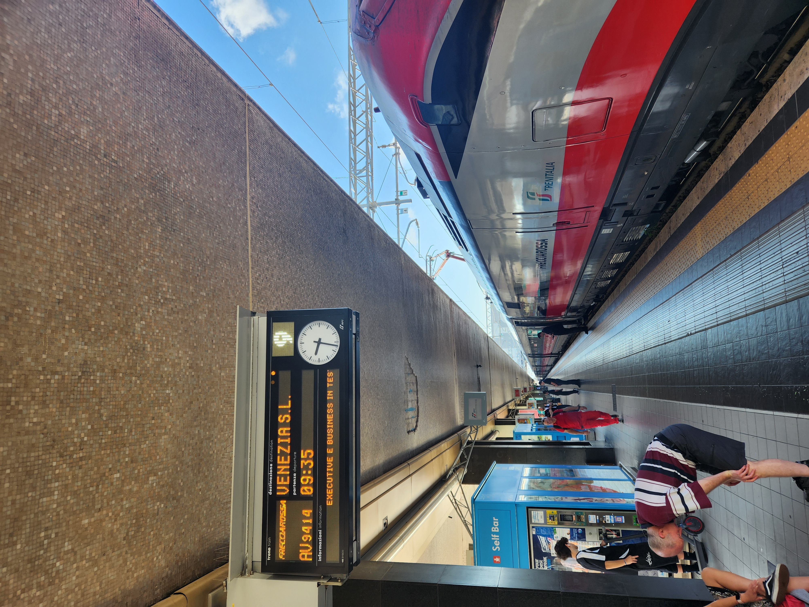
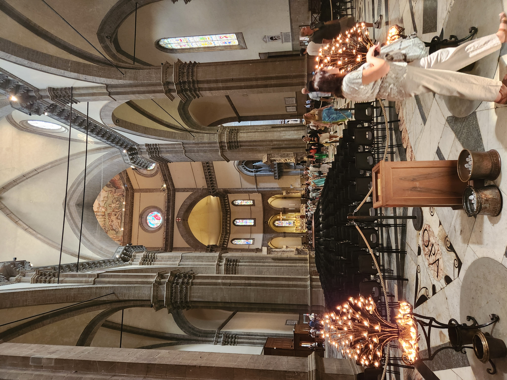
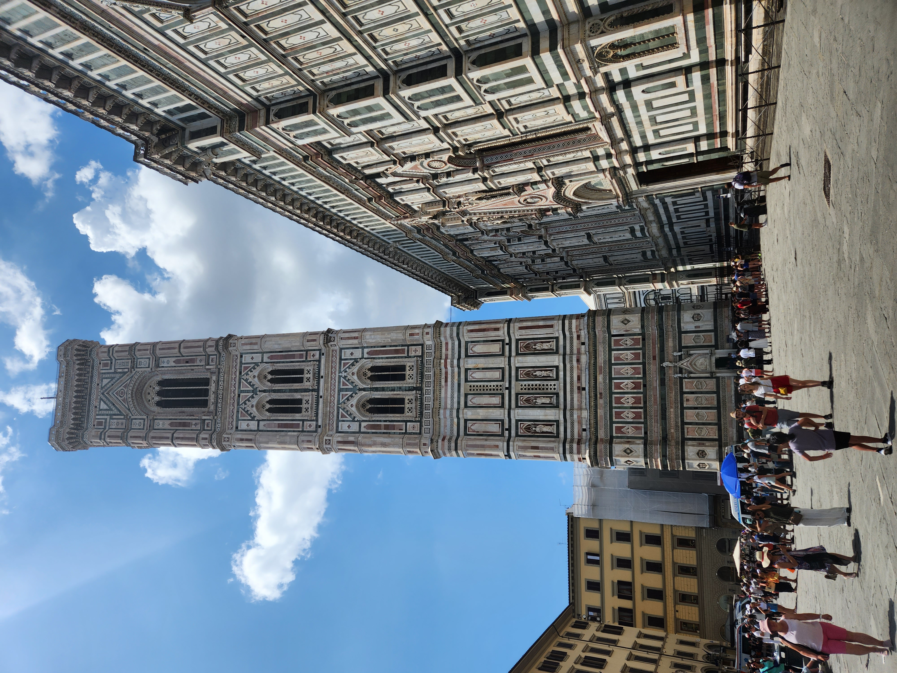
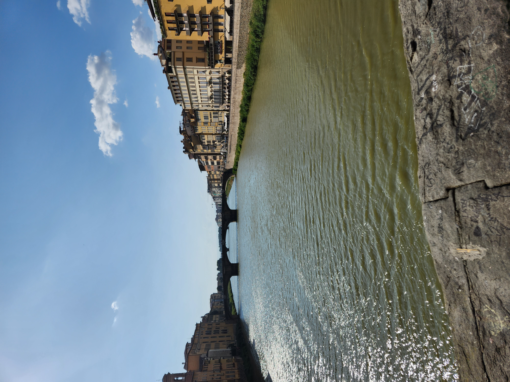
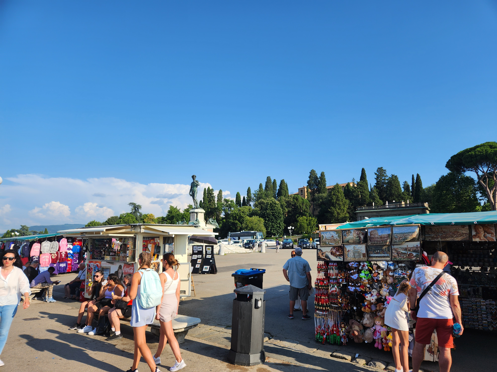

- 나폴리
- 로마
- 피렌체
- 베네치아
- 밀라노
7/4
피렌체

아침을 먹은 후, 로마 테르메니 역에서 기차를 타고 피렌체를 갔다.
숙소에 짐을 풀고 점심을 먹었다.점심은 이탈리아 와서 처음으로 한식당을 찾아갔다!!

두우모 성당을 갔다. 이렇게 큰 성당은 태어나서 처음 봤다.

그 다음에 조토의 종탑을 방문했다.
그다음에는 시뇨리아 광장을 갔다.

그러고 나서 베키오 다리를 갔다.

그리고 미켈란젤로 광장을 갔다.
그리고 저녁을 먹은 후 숙소로 돌아와서 잠을 잤다.